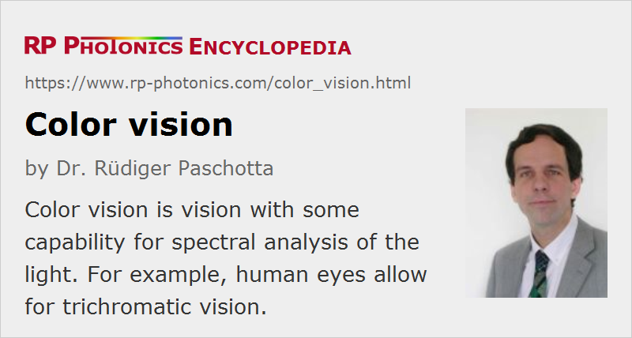

Color Vision
Definition: vision with some capability for spectral analysis of the light
Alternative term: chromatic vision
More specific terms: scotopic and photopic vision
German: Farbwahrnehmung, Farbensehen
Category: vision, displays and imaging
How to cite the article; suggest additional literature
Author: Dr. Rüdiger Paschotta
Color vision of an eye means that the eye can to some extent acquire spectral information on the light, and that spectral qualities are interpreted by the receiving brain as colors. This does not go as far as measuring an optical spectrum for each image point (→ hyperspectral imaging), but at least to see a difference in color between light inputs with significantly different optical wavelengths. For that purpose, it is sufficient to perform spectral imaging with just a few different spectral channels, as compared to hundreds or even thousands of technical instruments such as spectrometers and spectrographs. Not only human beings but also many animals have more or less expressed color vision, some of them well surpassing the capabilities of the human eye in that respect.
Physiological Basis of Color Vision
Color vision of eyes is based on the presence of photoreceptors with different spectral sensitivities. In the case of the human eye, such receptors are located in the retina, the light-sensitive layer at the back side of the eye. The brain can recognize colors based on the relative excitation strengths of the photoreceptors. In case of the human eye, there are four kinds of receptors, where one type of those (the rods, containing rhodopsin receptors) is used for night vision at low light levels (scotopic vision, without color perception), while the other three (L, M and S cones) are used for color vision (photopic vision) at higher light levels. (Here we ignore additional photoreceptors which are not used for vision, but for regulating the circadiane rhythm.) In the photopic vision regime, the color information for each location on the retina (i.e., for one image point) has only three dimensions, which means that the results can be associated with points in a three-dimensional color space, and the vision is called to be trichromatic. See the article on scotopic and photopic vision for more details particularly concerning light sensitivity and luminosity functions.
Note that the spectral sensitivities of the L, M and S receptors are quite dissimilar from an apparatus for RGB (red–green–blue) analysis. In particular, the sensitivity curves of the L and M receptors are strongly overlapping. For example, they receive a similar strength of excitation for incident monochromatic light at 550 nm. At 500 nm, the response from both types of receptors is substantially weaker, but the ratio between the two has not changed dramatically. However, the then significant signal from the S receptor tells the brain that we are getting towards the blue spectral region.
It would also be possible to quite reliably calculate the optical wavelength from the strength of the three receptor signals, if we know that the incident light is monochromatic. For the analysis of polychromatic light, however, only quite limited spectral information can be retrieved. For example, it is impossible to distinguish monochromatic light at 600 nm from a suitable mixture of light at 550 nm and 600 nm, or some broadband light in that spectral region, because the brain can “know” only the relative excitation strengths of two types of receptors but not what caused that.
Eyes of other animals often use a different combination of color receptors, which leads to substantially different color perception. For example, cats have dichromatic vision, based on only two different color receptors; that severely limits their ability to distinguish colors, but increases the potential for higher sensitivity and spatial resolution, which is more important for cats. On the other hand, some insects have a larger number of color receptors, also often spanning a wider spectral range well into the ultraviolet region; they can distinguish many more colors, which is helpful for their survival.
Colors of Objects
By spectrally analyzing light which is transmitted through objects or scattered at them, one can also recognize colors of objects.
Ideally, an object is illuminated with a white light source (e.g. daylight from the Sun), having a quite uniform distribution of optical power over the visible spectrum. The color of the transmitted or scattered light can then be interpreted as the color of the object itself. With some other light source, however, not having a suitable color balance, the color appearance of objects can be substantially modified. The most extreme case is illumination with monochromatic light, where any object can only appear with the color of that light, except in cases where fluorescence occurs or some other light emission of objects at other wavelengths.
The color rendering index of a light source is a measure for how well colors of objects can be judged.
Processing of Color Information
Although colors clearly have a physical and physiological basis, they should be understood as certain interpretations of spectral properties of light or of illuminated objects, which are performed by a brain based on the limited spectral information delivered by the eyes. Part of the image processing, including color analysis, is already done by cells in the retina, and further processing is performed in the visual cortex of the brain. In total, this analysis is substantially more sophisticated than what a technical spectrometer does. For example, it involves color corrections based on the perceived color tone of ambient light. That way, the brain tries to remove influences of variable ambient light on the perceived colors of objects. This is possible, for example, when we see colored objects between white objects which apparently reveal the color tone of the illumination.
Deficiencies of Color Vision
Not all human being have ordinary trichromatic color vision; mild or even severe deficiencies are relatively common. For example, a significant percentage of men (but not women) exhibits red–green color blindness, which generally results from some malfunction of one type of photoreceptor. Frequently, there is some kind of modified trichromatic vision, or even only dichromatic vision. In some rare cases, color vision is even completely absent.
Many persons with a mild form of color vision deficiency are not aware of that, because it is diagnosed only with sophisticated tests.
Questions and Comments from Users
Here you can submit questions and comments. As far as they get accepted by the author, they will appear above this paragraph together with the author’s answer. The author will decide on acceptance based on certain criteria. Essentially, the issue must be of sufficiently broad interest.
Please do not enter personal data here; we would otherwise delete it soon. (See also our privacy declaration.) If you wish to receive personal feedback or consultancy from the author, please contact him e.g. via e-mail.
By submitting the information, you give your consent to the potential publication of your inputs on our website according to our rules. (If you later retract your consent, we will delete those inputs.) As your inputs are first reviewed by the author, they may be published with some delay.
See also: scotopic and photopic vision, colorimetry, photodetectors, hyperspectral imaging
and other articles in the category vision, displays and imaging
|  |
If you like this page, please share the link with your friends and colleagues, e.g. via social media:
These sharing buttons are implemented in a privacy-friendly way!